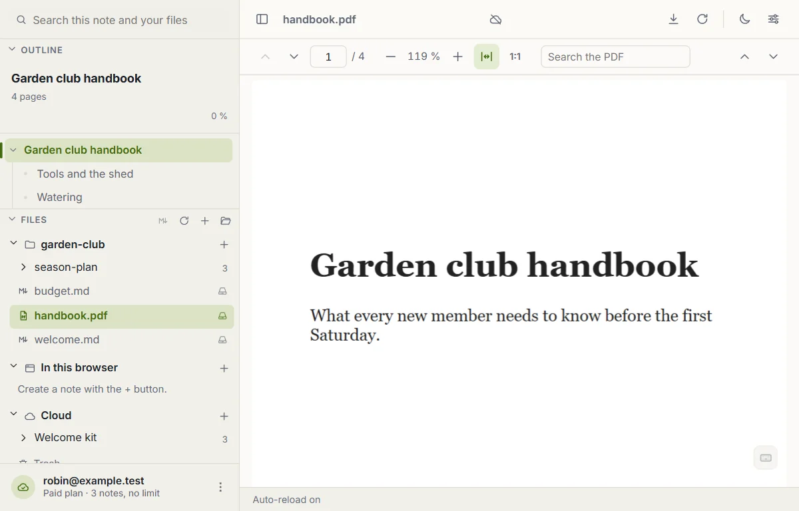
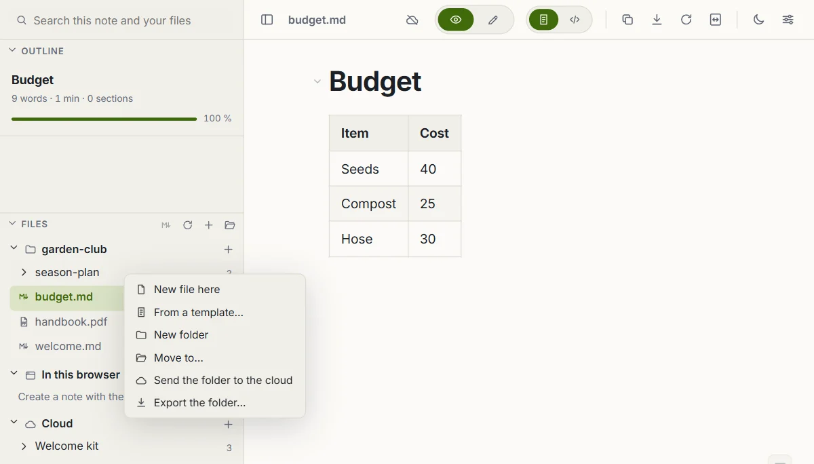
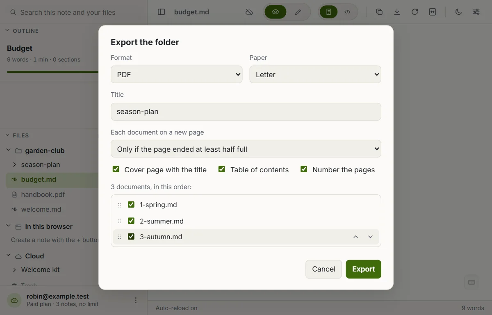
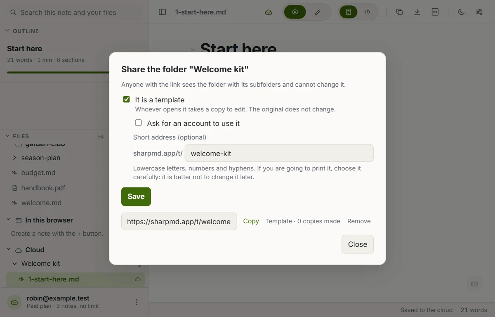
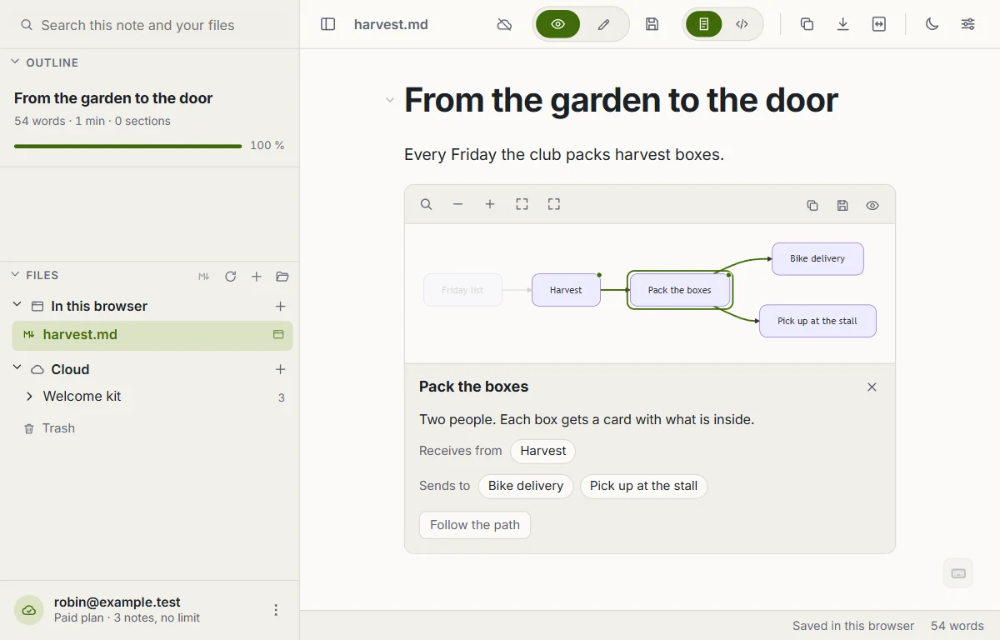

What's new
What was added to SharpMD, week by week. The newest is on top.
October 5 to 11, 2026
PDFs, books, images, audio and video open inside SharpMD
A PDF or an EPUB opens in its own reader, by pages or chapters, with an index and search. It remembers where you left off. Images open in a viewer with zoom, and audio and video play in the page.
In the Chrome extension you can also open the PDFs on your disk with SharpMD. It is off until you turn it on in Settings > Install.

Send files and folders to the cloud
Right-click a file or a folder in the explorer and send it to the cloud. A copy goes up and what is on your disk does not change. On a cloud folder, Upload files and Upload folder bring notes from your computer. You can also drop them from the file manager of your system.

Export a whole folder as one document
Right-click a folder and choose Export the folder. All its notes come out as a single PDF, HTML, Word or Markdown file, one after the other. Links between the notes become internal, and you can add a cover page and a table of contents.

Share a folder as a template
A cloud folder can be shared by link as a template. Whoever opens the link reads it and takes a copy to edit: to their browser, to their cloud or as a ZIP. Your original does not change. A short address such as sharpmd.app/t/my-template gives it a name you can print.

Diagrams you can explore
With the Explorable diagrams tool on, you walk through a Mermaid flowchart: zoom, drag, search for a node, and pick one to see what reaches it and where it leads. Turn it on in Settings > Tools.

See the agents your AI put to work
With the Agents tool on, the agents your AI registers over MCP show up live in the sidebar: who is working, on what, and who is waiting for you. On a board, the card an agent is working on carries a mark.
Also this week
- A guide inside the app, in English and Spanish. It opens offline, and you can save a copy of any of its notes.
- On the phone, Share has one more option: Share without formatting. It sends just the text, without the Markdown symbols.
- The site has its own pages for an address that does not exist and for when there is no connection.
Up to version 2.85
Earlier
What SharpMD could already do when this page started.
- Cloud notes you share with another account or by a read-only link, live sessions where several people write at once, and a version history.
- A connection for your AI over MCP, and comments on a block that the AI reads and resolves.
- An AI assistant inside the note that runs with your own key.
- Folders with a password, encrypted in your browser, and one password for your whole cloud.
- A cloud folder published as a website.
- A team space with roles and an activity log.
- Kanban boards with fields on each card.
- Tools you turn on when you need them: presentation mode, daily note, link map, Word export, Import to Markdown, JSON and YAML, read aloud and dictation.
- SharpMD Local, a program that shows your local servers, git worktrees and agent sessions in the app.
- Twelve themes, the Chrome extension, the Android app, and the web app installed on a phone or a computer.
Everything else is on the SharpMD home page.
HomeWhat's newMarkdown editor for AI agentsWYSIWYG Markdown editorPrivacyTermsSupport